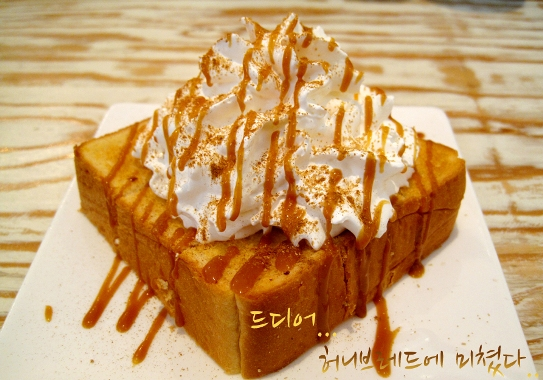

Hoy vamos a darle rienda suelta a la glucosa, al diabetes, a la sweetness con este rico postre coreano llamado Pan de Miel 허니 브레드 o con miel, como sea, aquí lo importante es que es muy rico. Prepárate un expreso para contrarrestar tanta dulzura, además de checarte los niveles de azúcar antes de entrarle. Esta delicia es tan popular que la pueden encontrar en casi todas las cafeterías de Corea, menos en los StarBucks, porque se fresean.
